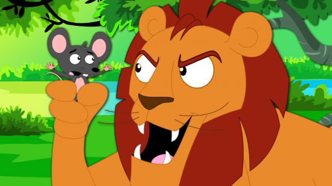
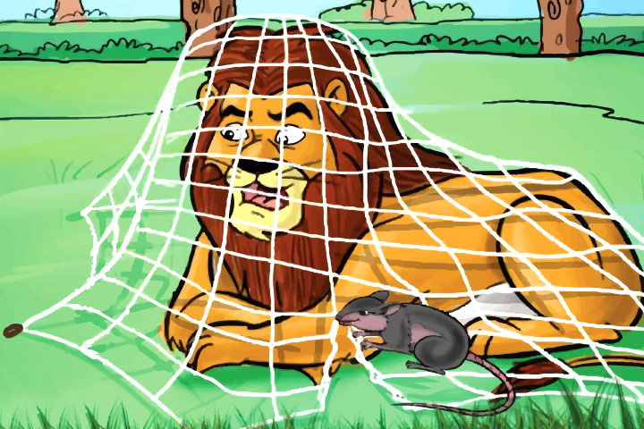
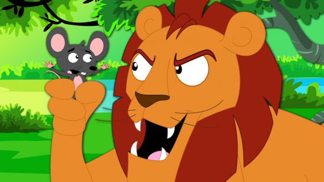
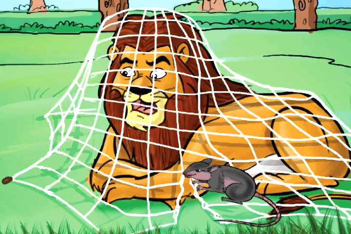

The Lion And The Mouse Story
A little mouse lives in a big forest.
(Ormanın birinde bir fare yaşar)
One day he is hungry So he walks in the forest
(Bir gün karnı acıkır)(Buyüzden ormanda yürür)
and looks for some food suddenly he meets a lion.
(ve yiyecek arar)(anidenbir aslana rastlar.)
The lion roars.The mouse is frightened.
( aslan kükrer.)(fare korkar.)
And the lion catches the mouse .
(Ve aslan fareyi yakalar.)
The mouse screams,“Please, Mr Lion, let me go.
(fare çığlık atar lütfen bay aslan beni bırak gideyim der.)
If you let me go, one day I will help you.”
(eğer beni bırakırsan bir gün sana yardım ederim.)
The lion is surprised.Then he laughs,“You are small.
(Aslan şaşırır.)(Sonra aslan,)(Sen küçüksün.)
I am big.How can you help me?”
(Ben büyüğüm)(Sen bana nasıl yardım edebilirsin diye güler.)
The mouse begs,”Please, let me go.”
(fare yalvarır.lütfen gitmeme izin ver.)
I have children at home.
(Evde çocuklarım var.)
They are hungryi They are waiting for me.
(Onların karınları aç)(Onlar beni bekliyorlar.)
The lion hear these words and becomes sad.
(Aslan bu sözleri duyar ve üzülür.)
Then the lion says,”Yes, you can go,
(sonra aslan tamam gidebilirsin)
however from now on, walk carefully.
(ancak bundan sonra dikkatli yürü)
The mouse says,”Thank you very much.”
(çok teşekkürler der fare)
The mouse says you’re welcome.
(Fare bir şey değiş der.)
The next week the mouse is hungry again.
(Ertesi hafta fare tekrar acıkır.)
He walks in the forest again.
(ertesi hafta fare ormanda tekrar yürür.)
He looks for some food again.
(Tekrar yiyecek birşeyler arar.)
He meets the same lion again,
(aynı aslana tekrar rastlar.)
but this time he is under a tree in a net.
(ama bu kez o bir ağacın altında tuzak içindedir.)
He goes to the lion.He says ‘wait for me.’
(fare aslanın yanına gider.)(Beni bekle,)
I will help you’He climbs the net.
(Sana yardım edeceğim der.)(Ağa tırmanır.)
He bites one rope, after the other until the lion is free .
(aslan özgür olana kadar bir ipi sonra diğerini ıssırır.)
At last the lion is free.
(sonunda aslan özgürdür.)
He says,”Thank you.”The mouse says,”You’re welcome.”
(teşekkür ederim der.)(fare bir şey değil der.)
 


